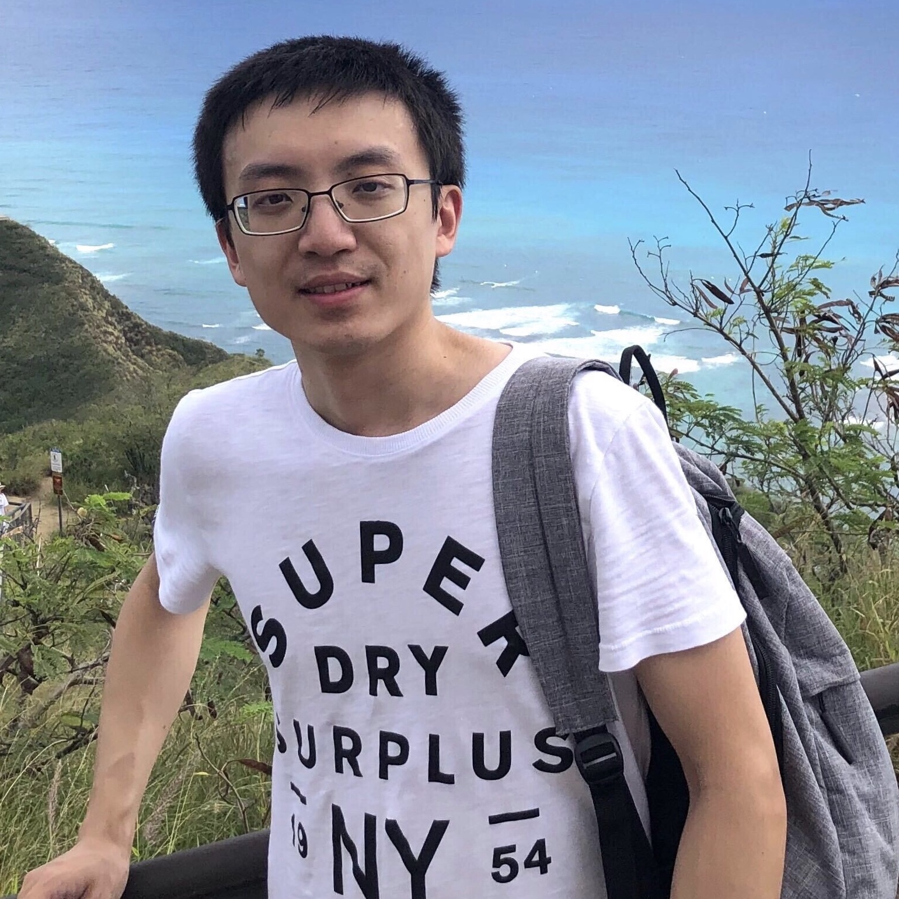
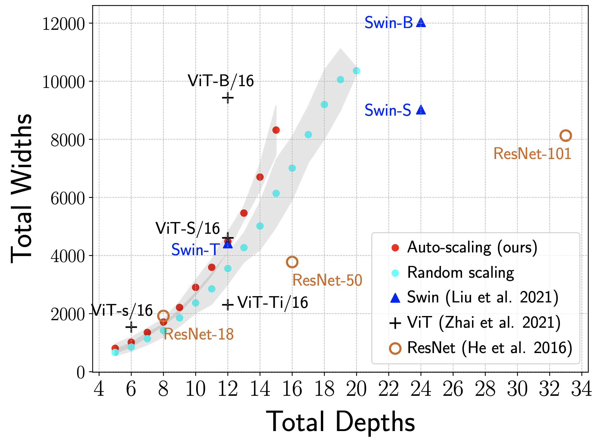
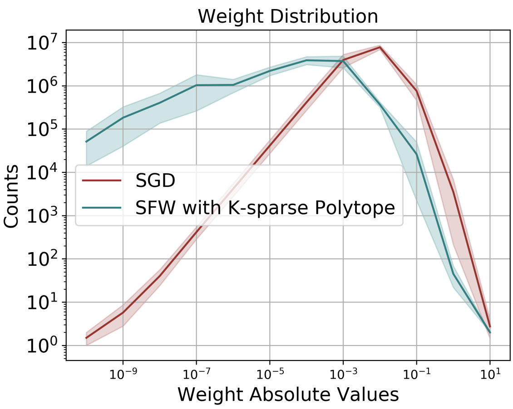
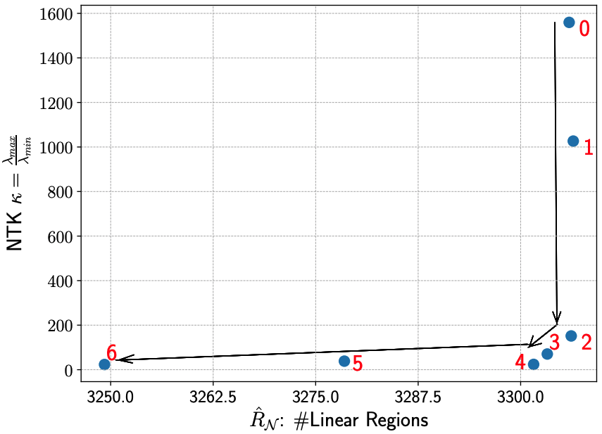
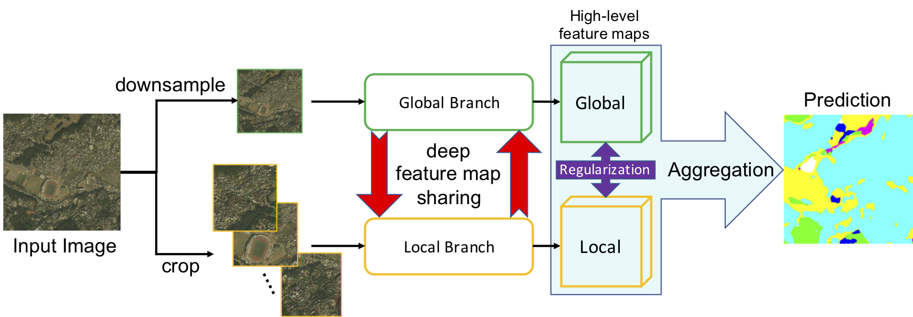
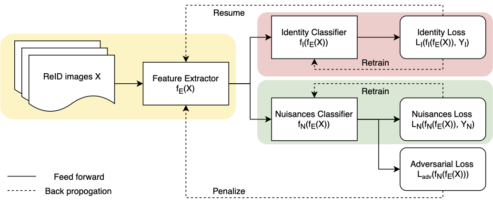
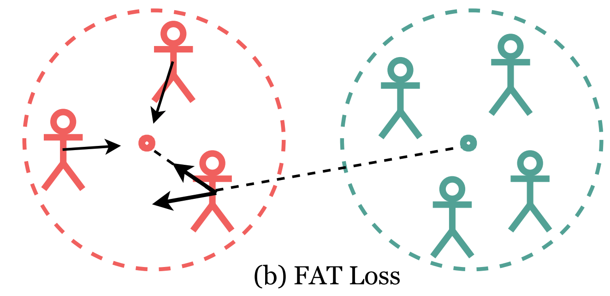

Hi, I'm Wuyang Chen
I'm a Ph.D. student in ECE Department, UT Austin
under the supervision of Professor Atlas Wang, VITA Group.
wuyang.chen AT utexas.edu


Education
- Ph.D. student in DICE, Electrical and Computer Engineering (08/2020 - present), UT Austin
- Ph.D. student in Computer Science (08/2019 - 08/2020), Texas A&M University (TAMU)
- Master’s Degree in Computer Science (01/2016 - 12/2016), Rice University
-
Bachelor’s Degree in Biosciences (08/2010 - 06/2014)
University of Science and Technology of China (USTC)
Research Interest
-
[A] Aims: Closing the Gap between DL Theory and DL Applications
-
[B] Bridges: Neural Architecture Search, Learning-Augmented Optimization, Neural Tangent Kernel
-
[C] Challenges: Computer Vision, AutoML, Sparse Networks
Publication


Learning Pruning-Friendly Networks via Frank-Wolfe: One-Shot, Any-Sparsity, And No Retraining
ICLR 2022




Talks
- Deep Learning: Classics and Trends "Neural Architecture Search on ImageNet in Four GPU Hours: A Theoretically Inspired Perspective.", October 2021.
- AutoML Seminars "Neural Architecture Search on ImageNet in Four GPU Hours: A Theoretically Inspired Perspective.", April 2021.
- CVPR’19 oral presentation "Collaborative Global-Local Networks for Memory-Efficient Segmentation of Ultra-high Resolution Images.", June 2019.
- CVPR’19 workshop on Gigapixel Videography in Computer Vision, June 2019.
- Best Student Speaker and Outstanding Researcher, CSST program, UCLA, Sep 2013.
Professional Experience & Activity
-
Research Intern, Google Brain, Jun. 2021 - May. 2022
Advisor: Dr. Xianzhi Du, Dr. Denny Zhou -
Research Intern, NVIDIA, Jan. 2020 - Aug. 2020
Advisor: Dr. Zhiding Yu, Prof. Anima Anandkumar -
Research Intern, Applied AI Lab, Horizon Robotics, Mar. 2019 - Aug. 2019
Advisor: Dr. Xianming Liu, Yuan Li -
Research Assistant, Visual Informatics Group, Aug. 2019 - Present
Advisor: Prof. Zhangyang (Atlas) Wang -
Research Assistant, University of Science and Technology of China, Sep. 2013 - Jun. 2014
Advisor: Prof. Haiyan Liu -
Research Intern, CSST program, UCLA, Jun. 2013 - Sep. 2013
Advisor: Prof. Todd O. Yeates
Professional Services:
- Workshop Organizer: 5th UG2+ (CVPR 2022) (Chair), 4th UG2+ (CVPR 2021) (Chair), 3rd UG2+ (CVPR 2020)
- Reviewer: ICML, ICCV, Neurips, ICLR, CVPR
Awards and Honors:
- Travel Award, Mathematical/Statistical approaches in DAta Science (MSDAS) Workshop, UT Dallas, 2019.
- Best Student Speaker and Outstanding Researcher, CSST program, UCLA, 2013.
- UCLA CSST Scholarship, 2013
- Gold Medal (Team Leader of 20 members) iGEM, MIT, 2012